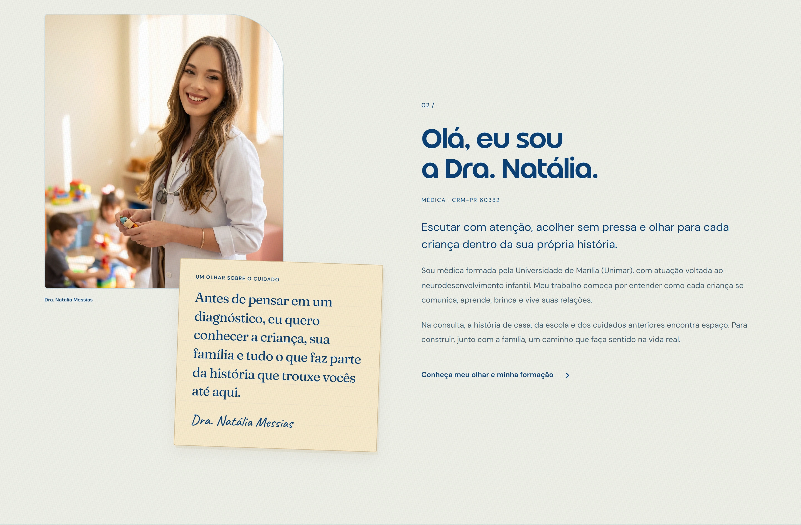

Acolhimento visual
As ilustrações e os tons claros acompanham o assunto do atendimento. A composição estabelece uma entrada visual menos impessoal para o conteúdo.
Design & desenvolvimento
UI / UX
Cuidado traduzido em linguagem visual.
 Ampliar
Ampliar Um site de atendimento infantil recebe famílias com dúvidas, não apenas visitantes procurando uma especialidade. A apresentação precisa abrir espaço para compreender a profissional e a proposta de cuidado.
A linguagem visual combina tipografia, ilustração e uma paleta suave. Esses elementos pertencem à identidade deste trabalho; cada projeto do portfólio pede uma linguagem própria.
As ilustrações e os tons claros acompanham o assunto do atendimento. A composição estabelece uma entrada visual menos impessoal para o conteúdo.
Títulos, explicações e informações práticas têm pesos diferentes. O visitante pode localizar um assunto antes de se comprometer com um bloco de leitura.
A apresentação da médica dá contexto ao serviço. Conteúdo e linguagem visual trabalham juntos na identificação de quem está por trás do atendimento.

AmpliarO site é uma implementação web com HTML, CSS e JavaScript, preparada com Vite. A composição é construída por seções, com regras responsivas que reorganizam texto e imagens conforme a largura disponível.
Tipografia e ilustração precisam funcionar como parte do conteúdo, inclusive em telas pequenas. O desenvolvimento acompanha essa hierarquia, preservando a leitura e os caminhos de navegação sem depender de uma única composição de desktop.
Esta é uma versão local em desenvolvimento. O caso apresenta a interface, não resultados clínicos nem uma avaliação de satisfação das famílias.